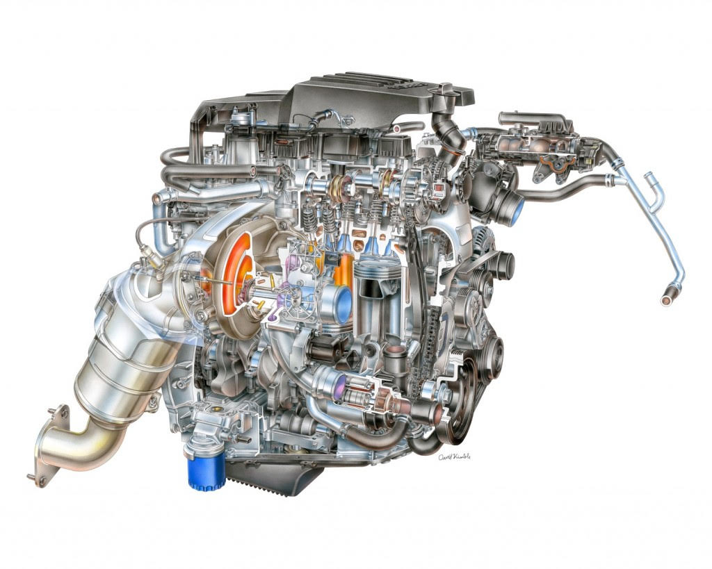

During the summer before beginning my Master's degree, I worked as a software engineering intern for General Motors in the Vehicle Mechatronics Embedded Controls group. My team worked on the software for the next generation of engine control modules, designing fuel injection strategies to meet or exceed new emissions standards and make all vehicles run more efficiently. This required an increasingly complex fuel injection system, one that was outpacing the limits of manual component testing.
Jacob Beyer
GM Summer Internship

My role on the team was to research and design automated methods of testing the fuel injection system. Building on the hardware-in-the-loop infrastructure already in place in the laboratory, I created a prototype for a testing suite that would handle more than 60% of the 800+ test cases that had been identified as business-critical, saving hundreds of hours in manual testing time. Additionally, I extensively documented the testing system with over 60 pages of detailed information on how the system worked, and ways to implement improvements that would bring it to 100% test coverage.

My legacy on the team extends further. At the end of my internship, I designed high-level strategies for bringing automation to other projects and presented my findings to Director-level managers. In addition to the tools I deployed, the automation frameworks and strategies I developed will continue to make a difference to the team as they work to create more eco-friendly engines.
This was a challenging internship project, with a large scope in a short timeframe. I had to think creatively to find ways of interacting with different software components through poorly-documented APIs. By communicating my concerns to other team members early in the design process, I was able to locate a GM internal tool that would assist in tying together the software components and hardware-in-the-loop element while simultaneously increasing the maintainability of my code.